Virtually every task performed by living organisms requires energy. Energy is needed to perform heavy labor and exercise, but humans also use energy while thinking, and even during sleep. In fact, the living cells of every organism constantly use energy. Nutrients and other molecules are imported into the cell, metabolized (broken down) and possibly synthesized into new molecules, modified if needed, transported around the cell, and possibly distributed to the entire organism. For example, the large proteins that make up muscles are built from smaller molecules imported from dietary amino acids. Complex carbohydrates are broken down into simple sugars that the cell uses for energy. Just as energy is required to both build and demolish a building, energy is required for the synthesis and breakdown of molecules as well as the transport of molecules into and out of cells. In addition, processes such as ingesting and breaking down pathogenic bacteria and viruses, exporting wastes and toxins, and movement of the cell require energy. From where, and in what form, does this energy come? How do living cells obtain energy, and how do they use it? This chapter will discuss different forms of energy and the physical laws that govern energy transfer. This chapter will also describe how cells use energy and replenish it, and how chemical reactions in the cell are performed with great efficiency.
- Explain what metabolic pathways are and distinguish anabolic from catabolic
- State the first and second laws of thermodynamics
- Explain the difference between kinetic and potential energy
- Describe endergonic and exergonic reactions
- Discuss how enzymes function as molecular catalysts
- Explain how ATP is used by the cell as an energy source
- Describe the overall result of glycolysis in terms of molecules produced
- Describe the citric acid cycle and oxidative phosphorylation
- Discuss the fundamental difference between anaerobic cellular respiration and fermentation
- Discuss how carbohydrate, protein, and lipid metabolic pathways interrelate
| # | Lesson | Key Concepts | Source |
|---|---|---|---|
| 1 | Metabolic Pathways & Energy | Bioenergetics, anabolic vs. catabolic, thermodynamics (1st & 2nd laws), entropy, potential vs. kinetic energy, chemical energy | CB 4.1 |
| 2 | Free Energy & Enzymes | Free energy (ΔG), exergonic vs. endergonic, activation energy, enzymes, substrates, active site, induced fit model | CB 4.1 |
| 3 | Enzyme Regulation | Competitive & allosteric inhibition, cofactors, coenzymes, vitamins, feedback inhibition, pharmaceutical drug design | CB 4.1 |
| 4 | ATP & Glycolysis | ATP structure/function, energy currency, glycolysis (2 phases), glucose → 2 pyruvate | CB 4.2 |
| 5 | Citric Acid Cycle & ETC | Pyruvate → acetyl CoA, citric acid cycle, electron transport chain, chemiosmosis, ATP synthase, ATP yield | CB 4.3 |
| 6 | Fermentation | Lactic acid fermentation, alcohol fermentation, anaerobic respiration, facultative vs. obligate anaerobes | CB 4.4 |
| 7 | Metabolic Connections | Other sugars, proteins, and lipids connecting to glucose catabolism pathways; evolution of metabolic pathways | CB 4.5 |
| 8 | Unit Review & Practice Test | All topics — 20-question comprehensive assessment | All |
| Standard | Description | Lessons |
|---|---|---|
| BIO.2e | The role of enzymes as biological catalysts | 2, 3 |
| BIO.2e | Energy transformation in cellular respiration | 4, 5, 6 |
| BIO.2e | Comparison of aerobic and anaerobic processes | 5, 6 |
- Explain what metabolic pathways are
- Distinguish anabolic from catabolic pathways
- State the first and second laws of thermodynamics
- Explain the difference between kinetic and potential energy
- Define chemical energy and explain its role in biology
Scientists use the term bioenergetics to describe the concept of energy flow (Figure 4.2) through living systems, such as cells. Cellular processes such as the building and breaking down of complex molecules occur through stepwise chemical reactions. Some of these chemical reactions are spontaneous and release energy, whereas others require energy to proceed. Just as living things must continually consume food to replenish their energy supplies, cells must continually obtain more energy to replenish that used by the many energy-requiring chemical reactions that constantly take place. Together, all of the chemical reactions that take place inside cells, including those that consume or generate energy, are referred to as the cell's metabolism.
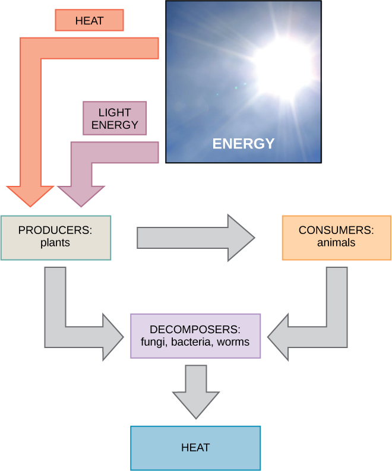
Consider the metabolism of sugar. This is a classic example of one of the many cellular processes that use and produce energy. Living things consume sugars as a major energy source, because sugar molecules have a great deal of energy stored within their bonds. For the most part, photosynthesizing organisms like plants produce these sugars. During photosynthesis, plants use energy (originally from sunlight) to convert carbon dioxide gas (CO₂) into sugar molecules (like glucose: C₆H₁₂O₆). They consume carbon dioxide and produce oxygen as a waste product.
Because this process involves synthesizing an energy-storing molecule, it requires energy input to proceed. During the light reactions of photosynthesis, energy is provided by a molecule called adenosine triphosphate (ATP), which is the primary energy currency of all cells. Just as the dollar is used as currency to buy goods, cells use molecules of ATP as energy currency to perform immediate work. In contrast, energy-storage molecules such as glucose are consumed only to be broken down to use their energy. The reaction that harvests the energy of a sugar molecule in cells requiring oxygen to survive can be summarized by the reverse reaction to photosynthesis. In this reaction, oxygen is consumed and carbon dioxide is released as a waste product.
Both of these reactions involve many steps.
The processes of making and breaking down sugar molecules illustrate two examples of metabolic pathways. A metabolic pathway is a series of chemical reactions that takes a starting molecule and modifies it, step-by-step, through a series of metabolic intermediates, eventually yielding a final product. In the example of sugar metabolism, the first metabolic pathway synthesized sugar from smaller molecules, and the other pathway broke sugar down into smaller molecules. These two opposite processes — the first requiring energy and the second producing energy — are referred to as anabolic pathways (building polymers) and catabolic pathways (breaking down polymers into their monomers), respectively. Consequently, metabolism is composed of synthesis (anabolism) and degradation (catabolism) (Figure 4.3).
It is important to know that the chemical reactions of metabolic pathways do not take place on their own. Each reaction step is facilitated, or catalyzed, by a protein called an enzyme. Enzymes are important for catalyzing all types of biological reactions — those that require energy as well as those that release energy.
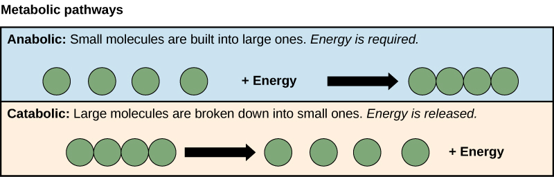
Thermodynamics refers to the study of energy and energy transfer involving physical matter. The matter relevant to a particular case of energy transfer is called a system, and everything outside of that matter is called the surroundings. For instance, when heating a pot of water on the stove, the system includes the stove, the pot, and the water. Energy is transferred within the system (between the stove, pot, and water). There are two types of systems: open and closed. In an open system, energy can be exchanged with its surroundings. The stovetop system is open because heat can be lost to the air. A closed system cannot exchange energy with its surroundings.
Biological organisms are open systems. Energy is exchanged between them and their surroundings as they use energy from the sun to perform photosynthesis or consume energy-storing molecules and release energy to the environment by doing work and releasing heat. Like all things in the physical world, energy is subject to physical laws. The laws of thermodynamics govern the transfer of energy in and among all systems in the universe.
In general, energy is defined as the ability to do work, or to create some kind of change. Energy exists in different forms. For example, electrical energy, light energy, and heat energy are all different types of energy. To appreciate the way energy flows into and out of biological systems, it is important to understand two of the physical laws that govern energy.
The first law of thermodynamics states that the total amount of energy in the universe is constant and conserved. In other words, there has always been, and always will be, exactly the same amount of energy in the universe. Energy exists in many different forms. According to the first law of thermodynamics, energy may be transferred from place to place or transformed into different forms, but it cannot be created or destroyed. The transfers and transformations of energy take place around us all the time. Light bulbs transform electrical energy into light and heat energy. Gas stoves transform chemical energy from natural gas into heat energy. Plants perform one of the most biologically useful energy transformations on earth: that of converting the energy of sunlight to chemical energy stored within organic molecules (Figure 4.2). Some examples of energy transformations are shown in Figure 4.4.
The challenge for all living organisms is to obtain energy from their surroundings in forms that they can transfer or transform into usable energy to do work. Living cells have evolved to meet this challenge. Chemical energy stored within organic molecules such as sugars and fats is transferred and transformed through a series of cellular chemical reactions into energy within molecules of ATP. Energy in ATP molecules is easily accessible to do work. Examples of the types of work that cells need to do include building complex molecules, transporting materials, powering the motion of cilia or flagella, and contracting muscle fibers to create movement.
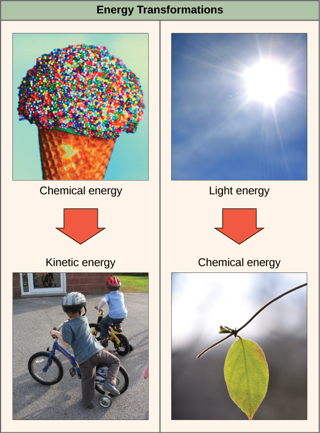
A living cell's primary tasks of obtaining, transforming, and using energy to do work may seem simple. However, the second law of thermodynamics explains why these tasks are harder than they appear. All energy transfers and transformations are never completely efficient. In every energy transfer, some amount of energy is lost in a form that is unusable. In most cases, this form is heat energy. Thermodynamically, heat energy is defined as the energy transferred from one system to another that is not work. For example, when a light bulb is turned on, some of the energy being converted from electrical energy into light energy is lost as heat energy. Likewise, some energy is lost as heat energy during cellular metabolic reactions.
An important concept in physical systems is that of order and disorder. The more energy that is lost by a system to its surroundings, the less ordered and more random the system is. Scientists refer to the measure of randomness or disorder within a system as entropy. High entropy means high disorder and low energy. Molecules and chemical reactions have varying entropy as well. For example, entropy increases as molecules at a high concentration in one place diffuse and spread out. The second law of thermodynamics says that energy will always be lost as heat in energy transfers or transformations.
Living things are highly ordered, requiring constant energy input to be maintained in a state of low entropy.
When an object is in motion, there is energy associated with that object. Think of a wrecking ball. Even a slow-moving wrecking ball can do a great deal of damage to other objects. Energy associated with objects in motion is called kinetic energy (Figure 4.5). A speeding bullet, a walking person, and the rapid movement of molecules in the air (which produces heat) all have kinetic energy.
Now what if that same motionless wrecking ball is lifted two stories above ground with a crane? If the suspended wrecking ball is unmoving, is there energy associated with it? The answer is yes. The energy that was required to lift the wrecking ball did not disappear, but is now stored in the wrecking ball by virtue of its position and the force of gravity acting on it. This type of energy is called potential energy (Figure 4.5). If the ball were to fall, the potential energy would be transformed into kinetic energy until all of the potential energy was exhausted when the ball rested on the ground. Wrecking balls also swing like a pendulum; through the swing, there is a constant change of potential energy (highest at the top of the swing) to kinetic energy (highest at the bottom of the swing). Other examples of potential energy include the energy of water held behind a dam or a person about to skydive out of an airplane.
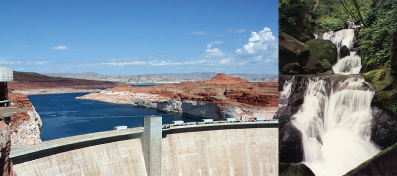
Potential energy is not only associated with the location of matter, but also with the structure of matter. Even a spring on the ground has potential energy if it is compressed; so does a rubber band that is pulled taut. On a molecular level, the bonds that hold the atoms of molecules together exist in a particular structure that has potential energy. Remember that anabolic cellular pathways require energy to synthesize complex molecules from simpler ones and catabolic pathways release energy when complex molecules are broken down. The fact that energy can be released by the breakdown of certain chemical bonds implies that those bonds have potential energy. In fact, there is potential energy stored within the bonds of all the food molecules we eat, which is eventually harnessed for use. This is because these bonds can release energy when broken. The type of potential energy that exists within chemical bonds, and is released when those bonds are broken, is called chemical energy. Chemical energy is responsible for providing living cells with energy from food. The release of energy occurs when the molecular bonds within food molecules are broken.

Complete the written checkpoint above to unlock the quiz.
- Define free energy and explain how ΔG determines whether a reaction is exergonic or endergonic
- Distinguish exergonic from endergonic reactions
- Define activation energy and explain why it matters
- Discuss how enzymes function as molecular catalysts
- Describe the induced-fit model of enzyme-substrate binding
After learning that chemical reactions release energy when energy-storing bonds are broken, an important next question is the following: How is the energy associated with these chemical reactions quantified and expressed? How can the energy released from one reaction be compared to that of another reaction? A measurement of free energy is used to quantify these energy transfers. Recall that according to the second law of thermodynamics, all energy transfers involve the loss of some amount of energy in an unusable form such as heat. Free energy specifically refers to the energy associated with a chemical reaction that is available after the losses are accounted for. In other words, free energy is usable energy, or energy that is available to do work.
If energy is released during a chemical reaction, then the change in free energy, signified as ∆G (delta G) will be a negative number. A negative change in free energy also means that the products of the reaction have less free energy than the reactants, because they release some free energy during the reaction. Reactions that have a negative change in free energy and consequently release free energy are called exergonic reactions. Think: exergonic means energy is exiting the system. These reactions are also referred to as spontaneous reactions, and their products have less stored energy than the reactants. An important distinction must be drawn between the term spontaneous and the idea of a chemical reaction occurring immediately. Contrary to the everyday use of the term, a spontaneous reaction is not one that suddenly or quickly occurs. The rusting of iron is an example of a spontaneous reaction that occurs slowly, little by little, over time.
If a chemical reaction absorbs energy rather than releases energy on balance, then the ∆G for that reaction will be a positive value. In this case, the products have more free energy than the reactants. Thus, the products of these reactions can be thought of as energy-storing molecules. These chemical reactions are called endergonic reactions and they are non-spontaneous. An endergonic reaction will not take place on its own without the addition of free energy.
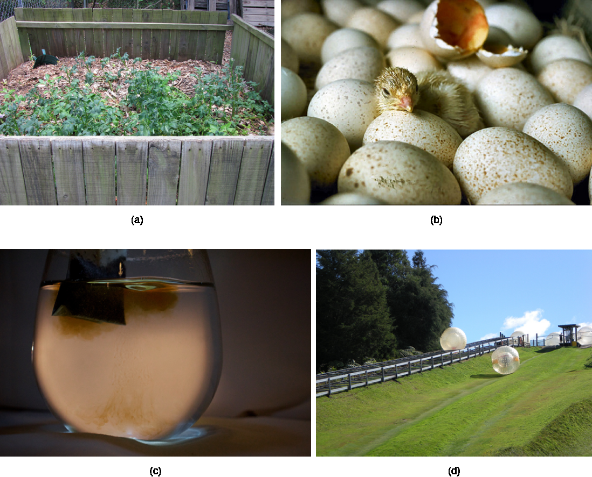
There is another important concept that must be considered regarding endergonic and exergonic reactions. Exergonic reactions require a small amount of energy input to get going, before they can proceed with their energy-releasing steps. These reactions have a net release of energy, but still require some energy input in the beginning. This small amount of energy input necessary for all chemical reactions to occur is called the activation energy.
A substance that helps a chemical reaction to occur is called a catalyst, and the molecules that catalyze biochemical reactions are called enzymes. Most enzymes are proteins and perform the critical task of lowering the activation energies of chemical reactions inside the cell. Most of the reactions critical to a living cell happen too slowly at normal temperatures to be of any use to the cell. Without enzymes to speed up these reactions, life could not persist. Enzymes do this by binding to the reactant molecules and holding them in such a way as to make the chemical bond-breaking and -forming processes take place more easily. It is important to remember that enzymes do not change whether a reaction is exergonic (spontaneous) or endergonic. This is because they do not change the free energy of the reactants or products. They only reduce the activation energy required for the reaction to go forward (Figure 4.7). In addition, an enzyme itself is unchanged by the reaction it catalyzes. Once one reaction has been catalyzed, the enzyme is able to participate in other reactions.
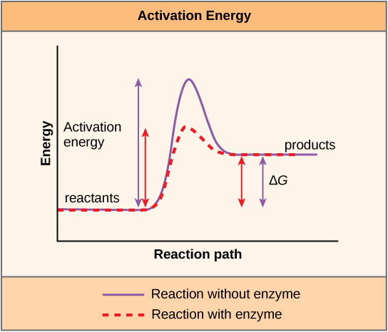
The chemical reactants to which an enzyme binds are called the enzyme's substrates. There may be one or more substrates, depending on the particular chemical reaction. In some reactions, a single reactant substrate is broken down into multiple products. In others, two substrates may come together to create one larger molecule. Two reactants might also enter a reaction and both become modified, but they leave the reaction as two products. The location within the enzyme where the substrate binds is called the enzyme's active site. The active site is where the "action" happens. Since enzymes are proteins, there is a unique combination of amino acid side chains within the active site. Each side chain is characterized by different properties. They can be large or small, weakly acidic or basic, hydrophilic or hydrophobic, positively or negatively charged, or neutral. The unique combination of side chains creates a very specific chemical environment within the active site. This specific environment is suited to bind to one specific chemical substrate (or substrates).
Active sites are subject to influences of the local environment. Increasing the environmental temperature generally increases reaction rates, enzyme-catalyzed or otherwise. However, temperatures outside of an optimal range reduce the rate at which an enzyme catalyzes a reaction. Hot temperatures will eventually cause enzymes to denature, an irreversible change in the three-dimensional shape and therefore the function of the enzyme. Enzymes are also suited to function best within a certain pH and salt concentration range, and, as with temperature, extreme pH, and salt concentrations can cause enzymes to denature.
For many years, scientists thought that enzyme-substrate binding took place in a simple "lock and key" fashion. This model asserted that the enzyme and substrate fit together perfectly in one instantaneous step. However, current research supports a model called induced fit (Figure 4.8). The induced-fit model expands on the lock-and-key model by describing a more dynamic binding between enzyme and substrate. As the enzyme and substrate come together, their interaction causes a mild shift in the enzyme's structure that forms an ideal binding arrangement between enzyme and substrate.
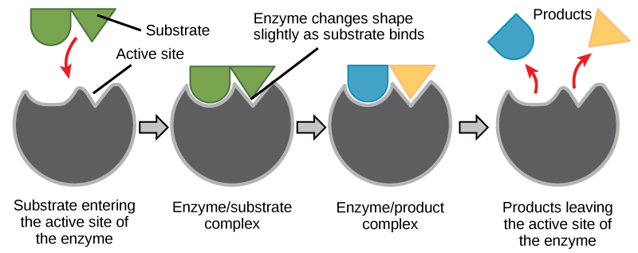
When an enzyme binds its substrate, an enzyme-substrate complex is formed. This complex lowers the activation energy of the reaction and promotes its rapid progression in one of multiple possible ways. On a basic level, enzymes promote chemical reactions that involve more than one substrate by bringing the substrates together in an optimal orientation for reaction. Another way in which enzymes promote the reaction of their substrates is by creating an optimal environment within the active site for the reaction to occur. The chemical properties that emerge from the particular arrangement of amino acid R groups within an active site create the perfect environment for an enzyme's specific substrates to react.
The enzyme-substrate complex can also lower activation energy by compromising the bond structure so that it is easier to break. Finally, enzymes can also lower activation energies by taking part in the chemical reaction itself. In these cases, it is important to remember that the enzyme will always return to its original state by the completion of the reaction. One of the hallmark properties of enzymes is that they remain ultimately unchanged by the reactions they catalyze. After an enzyme has catalyzed a reaction, it releases its product(s) and can catalyze a new reaction.
Complete the written checkpoint above to unlock the quiz.
- Explain competitive and noncompetitive enzyme inhibition
- Describe allosteric inhibition and allosteric activation
- Explain the roles of cofactors and coenzymes
- Describe feedback inhibition in metabolic pathways
- Discuss how understanding enzymes leads to pharmaceutical drug development
It would seem ideal to have a scenario in which all of an organism's enzymes existed in abundant supply and functioned optimally under all cellular conditions, in all cells, at all times. However, a variety of mechanisms ensures that this does not happen. Cellular needs and conditions constantly vary from cell to cell, and change within individual cells over time. The required enzymes of stomach cells differ from those of fat storage cells, skin cells, blood cells, and nerve cells. Furthermore, a digestive organ cell works much harder to process and break down nutrients during the time that closely follows a meal compared with many hours after a meal. As these cellular demands and conditions vary, so must the amounts and functionality of different enzymes.
Since the rates of biochemical reactions are controlled by activation energy, and enzymes lower and determine activation energies for chemical reactions, the relative amounts and functioning of the variety of enzymes within a cell ultimately determine which reactions will proceed and at what rates. This determination is tightly controlled in cells. In certain cellular environments, enzyme activity is partly controlled by environmental factors like pH, temperature, salt concentration, and, in some cases, cofactors or coenzymes.
Enzymes can also be regulated in ways that either promote or reduce enzyme activity. There are many kinds of molecules that inhibit or promote enzyme function, and various mechanisms by which they do so.
In some cases of enzyme inhibition, an inhibitor molecule is similar enough to a substrate that it can bind to the active site and simply block the substrate from binding. When this happens, the enzyme is inhibited through competitive inhibition, because an inhibitor molecule competes with the substrate for binding to the active site.
On the other hand, in noncompetitive inhibition, an inhibitor molecule binds to the enzyme in a location other than the active site, called an allosteric site, but still manages to prevent substrate binding to the active site. Some inhibitor molecules bind to enzymes in a location where their binding induces a conformational change that reduces the enzyme activity as it no longer effectively catalyzes the conversion of the substrate to product. This type of inhibition is called allosteric inhibition (Figure 4.9). Most allosterically regulated enzymes are made up of more than one polypeptide, meaning that they have more than one protein subunit. When an allosteric inhibitor binds to a region on an enzyme, all active sites on the protein subunits are changed slightly such that they bind their substrates with less efficiency.
There are allosteric activators as well as inhibitors. Allosteric activators bind to locations on an enzyme away from the active site, inducing a conformational change that increases the affinity of the enzyme's active site(s) for its substrate(s) (Figure 4.9).
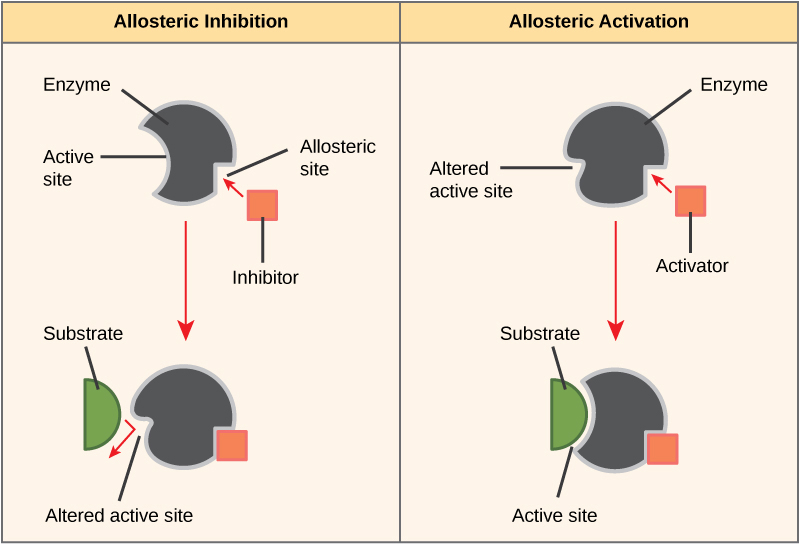
Consider statins for example — statins is the name given to one class of drugs that can reduce cholesterol levels. These compounds are inhibitors of the enzyme HMG-CoA reductase, which is the enzyme that synthesizes cholesterol from lipids in the body. By inhibiting this enzyme, the level of cholesterol synthesized in the body can be reduced. Similarly, acetaminophen, popularly marketed under the brand name Tylenol, is an inhibitor of the enzyme cyclooxygenase. While it is used to provide relief from fever and inflammation (pain), its mechanism of action is still not completely understood.
How are drugs discovered? One of the biggest challenges in drug discovery is identifying a drug target. A drug target is a molecule that is literally the target of the drug. In the case of statins, HMG-CoA reductase is the drug target. Drug targets are identified through painstaking research in the laboratory. Identifying the target alone is not enough; scientists also need to know how the target acts inside the cell and which reactions go awry in the case of disease. Once the target and the pathway are identified, then the actual process of drug design begins. In this stage, chemists and biologists work together to design and synthesize molecules that can block or activate a particular reaction. However, this is only the beginning: If and when a drug prototype is successful in performing its function, then it is subjected to many tests from in vitro experiments to clinical trials before it can get approval from the U.S. Food and Drug Administration to be on the market.
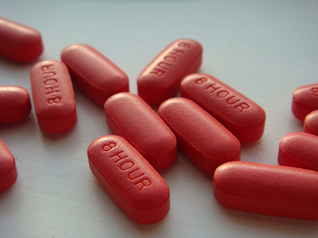
Many enzymes do not work optimally, or even at all, unless bound to other specific non-protein helper molecules. They may bond either temporarily through ionic or hydrogen bonds, or permanently through stronger covalent bonds. Binding to these molecules promotes optimal shape and function of their respective enzymes. Two examples of these types of helper molecules are cofactors and coenzymes. Cofactors are inorganic ions such as ions of iron and magnesium. Coenzymes are organic helper molecules, those with a basic atomic structure made up of carbon and hydrogen. Like enzymes, these molecules participate in reactions without being changed themselves and are ultimately recycled and reused. Vitamins are the source of coenzymes. Some vitamins are the precursors of coenzymes and others act directly as coenzymes. Vitamin C is a direct coenzyme for multiple enzymes that take part in building the important connective tissue, collagen. Therefore, enzyme function is, in part, regulated by the abundance of various cofactors and coenzymes, which may be supplied by an organism's diet or, in some cases, produced by the organism.
Molecules can regulate enzyme function in many ways. The major question remains, however: What are these molecules and where do they come from? Some are cofactors and coenzymes, as you have learned. What other molecules in the cell provide enzymatic regulation such as allosteric modulation, and competitive and non-competitive inhibition? Perhaps the most relevant sources of regulatory molecules, with respect to enzymatic cellular metabolism, are the products of the cellular metabolic reactions themselves. In a most efficient and elegant way, cells have evolved to use the products of their own reactions for feedback inhibition of enzyme activity. Feedback inhibition involves the use of a reaction product to regulate its own further production (Figure 4.11). The cell responds to an abundance of the products by slowing down production during anabolic or catabolic reactions. Such reaction products may inhibit the enzymes that catalyzed their production through the mechanisms described above.
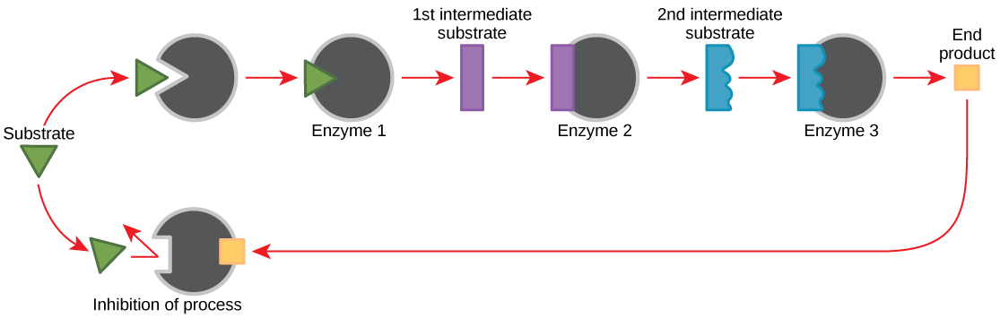
The production of both amino acids and nucleotides is controlled through feedback inhibition. Additionally, ATP is an allosteric regulator of some of the enzymes involved in the catabolic breakdown of sugar, the process that creates ATP. In this way, when ATP is in abundant supply, the cell can prevent the production of ATP. On the other hand, ADP serves as a positive allosteric regulator (an allosteric activator) for some of the same enzymes that are inhibited by ATP. Thus, when relative levels of ADP are high compared to ATP, the cell is triggered to produce more ATP through sugar catabolism.
Complete the written checkpoint above to unlock the quiz.
- Explain how ATP is used by the cell as an energy source
- Describe the structure of ATP
- Describe the overall result in terms of molecules produced of the breakdown of glucose by glycolysis
Even exergonic, energy-releasing reactions require a small amount of activation energy to proceed. However, consider endergonic reactions, which require much more energy input because their products have more free energy than their reactants. Within the cell, where does energy to power such reactions come from? The answer lies with an energy-supplying molecule called adenosine triphosphate, or ATP. ATP is a small, relatively simple molecule, but within its bonds contains the potential for a quick burst of energy that can be harnessed to perform cellular work. This molecule can be thought of as the primary energy currency of cells in the same way that money is the currency that people exchange for things they need. ATP is used to power the majority of energy-requiring cellular reactions.
A living cell cannot store significant amounts of free energy. Excess free energy would result in an increase of heat in the cell, which would denature enzymes and other proteins, and thus destroy the cell. Rather, a cell must be able to store energy safely and release it for use only as needed. Living cells accomplish this using ATP, which can be used to fill any energy need of the cell. How? It functions as a rechargeable battery.
When ATP is broken down, usually by the removal of its terminal phosphate group, energy is released. This energy is used to do work by the cell, usually by the binding of the released phosphate to another molecule, thus activating it. For example, in the mechanical work of muscle contraction, ATP supplies energy to move the contractile muscle proteins.
At the heart of ATP is a molecule of adenosine monophosphate (AMP), which is composed of an adenine molecule bonded to both a ribose molecule and a single phosphate group (Figure 4.12). Ribose is a five-carbon sugar found in RNA and AMP is one of the nucleotides in RNA. The addition of a second phosphate group to this core molecule results in adenosine diphosphate (ADP); the addition of a third phosphate group forms adenosine triphosphate (ATP).
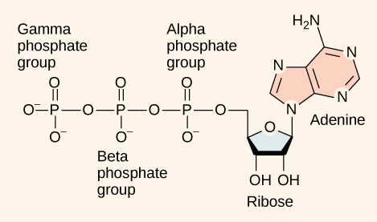
The addition of a phosphate group to a molecule requires a high amount of energy and results in a high-energy bond. Phosphate groups are negatively charged and thus repel one another when they are arranged in series, as they are in ADP and ATP. This repulsion makes the ADP and ATP molecules inherently unstable. The release of one or two phosphate groups from ATP, a process called hydrolysis, releases energy.
You have read that nearly all of the energy used by living things comes to them in the bonds of the sugar, glucose. Glycolysis is the first step in the breakdown of glucose to extract energy for cell metabolism. Many living organisms carry out glycolysis as part of their metabolism. Glycolysis takes place in the cytoplasm of most prokaryotic and all eukaryotic cells.
Glycolysis begins with the six-carbon, ring-shaped structure of a single glucose molecule and ends with two molecules of a three-carbon sugar called pyruvate. Glycolysis consists of two distinct phases. In the first part of the glycolysis pathway, energy is used to make adjustments so that the six-carbon sugar molecule can be split evenly into two three-carbon pyruvate molecules. In the second part of glycolysis, ATP and nicotinamide-adenine dinucleotide (NADH) are produced (Figure 4.13).
If the cell cannot catabolize the pyruvate molecules further, it will harvest only two ATP molecules from one molecule of glucose. For example, mature mammalian red blood cells are only capable of glycolysis, which is their sole source of ATP. If glycolysis is interrupted, these cells would eventually die.
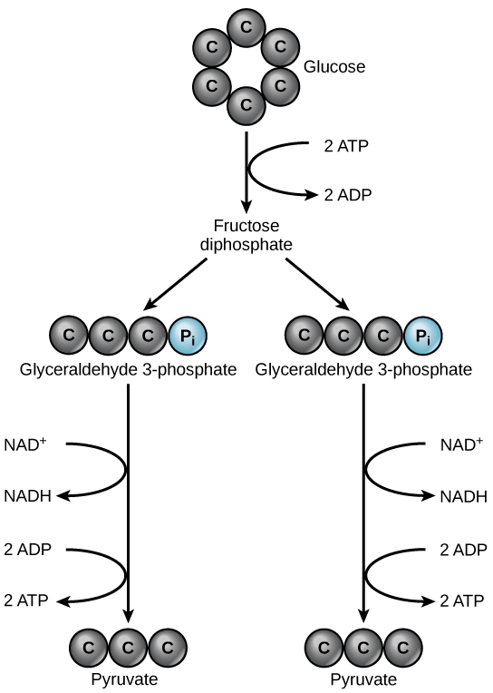
Output: 2 pyruvate (3 carbons each) + 2 ATP + 2 NADH
Location: Cytoplasm (all cells — prokaryotic and eukaryotic)
Oxygen required? No — glycolysis is anaerobic
Complete the written checkpoint above to unlock the quiz.
- Describe the location of the citric acid cycle and oxidative phosphorylation in the cell
- Describe the overall outcome of the citric acid cycle and oxidative phosphorylation in terms of products
- Describe the relationships of glycolysis, the citric acid cycle, and oxidative phosphorylation in terms of inputs and outputs
In eukaryotic cells, the pyruvate molecules produced at the end of glycolysis are transported into mitochondria, which are sites of cellular respiration. If oxygen is available, aerobic respiration will go forward. In mitochondria, pyruvate will be transformed into a two-carbon acetyl group (by removing a molecule of carbon dioxide) that will be picked up by a carrier compound called coenzyme A (CoA), which is made from vitamin B5. The resulting compound is called acetyl CoA (Figure 4.14). Acetyl CoA can be used in a variety of ways by the cell, but its major function is to deliver the acetyl group derived from pyruvate to the next pathway in glucose catabolism.
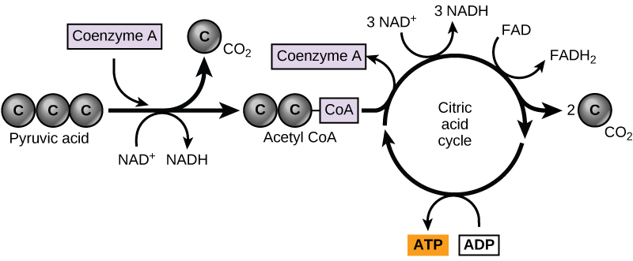
Like the conversion of pyruvate to acetyl CoA, the citric acid cycle in eukaryotic cells takes place in the matrix of the mitochondria. Unlike glycolysis, the citric acid cycle is a closed loop: The last part of the pathway regenerates the compound used in the first step. The eight steps of the cycle are a series of chemical reactions that produces two carbon dioxide molecules, one ATP molecule (or an equivalent), and reduced forms (NADH and FADH₂) of NAD⁺ and FAD⁺, important coenzymes in the cell. Part of this is considered an aerobic pathway (oxygen-requiring) because the NADH and FADH₂ produced must transfer their electrons to the next pathway in the system, which will use oxygen. If oxygen is not present, this transfer does not occur.
Two carbon atoms come into the citric acid cycle from each acetyl group. Two carbon dioxide molecules are released on each turn of the cycle; however, these do not contain the same carbon atoms contributed by the acetyl group on that turn of the pathway. The two acetyl-carbon atoms will eventually be released on later turns of the cycle; in this way, all six carbon atoms from the original glucose molecule will be eventually released as carbon dioxide. It takes two turns of the cycle to process the equivalent of one glucose molecule. Each turn of the cycle forms three high-energy NADH molecules and one high-energy FADH₂ molecule. These high-energy carriers will connect with the last portion of aerobic respiration to produce ATP molecules. One ATP (or an equivalent) is also made in each cycle. Several of the intermediate compounds in the citric acid cycle can be used in synthesizing non-essential amino acids; therefore, the cycle is both anabolic and catabolic.
You have just read about two pathways in glucose catabolism — glycolysis and the citric acid cycle — that generate ATP. Most of the ATP generated during the aerobic catabolism of glucose, however, is not generated directly from these pathways. Rather, it derives from a process that begins with passing electrons through a series of chemical reactions to a final electron acceptor, oxygen. These reactions take place in specialized protein complexes located in the inner membrane of the mitochondria of eukaryotic organisms and on the inner part of the cell membrane of prokaryotic organisms. The energy of the electrons is harvested and used to generate an electrochemical gradient across the inner mitochondrial membrane. The potential energy of this gradient is used to generate ATP. The entirety of this process is called oxidative phosphorylation.
The electron transport chain (Figure 4.15a) is the last component of aerobic respiration and is the only part of metabolism that uses atmospheric oxygen. Oxygen continuously diffuses into plants for this purpose. In animals, oxygen enters the body through the respiratory system. Electron transport is a series of chemical reactions that resembles a bucket brigade in that electrons are passed rapidly from one component to the next, to the endpoint of the chain where oxygen is the final electron acceptor and water is produced. There are four complexes composed of proteins, labeled I through IV in Figure 4.15c, and the aggregation of these four complexes, together with associated mobile, accessory electron carriers, is called the electron transport chain. The electron transport chain is present in multiple copies in the inner mitochondrial membrane of eukaryotes and in the plasma membrane of prokaryotes.
In each transfer of an electron through the electron transport chain, the electron loses energy, but with some transfers, the energy is stored as potential energy by using it to pump hydrogen ions across the inner mitochondrial membrane into the intermembrane space, creating an electrochemical gradient.
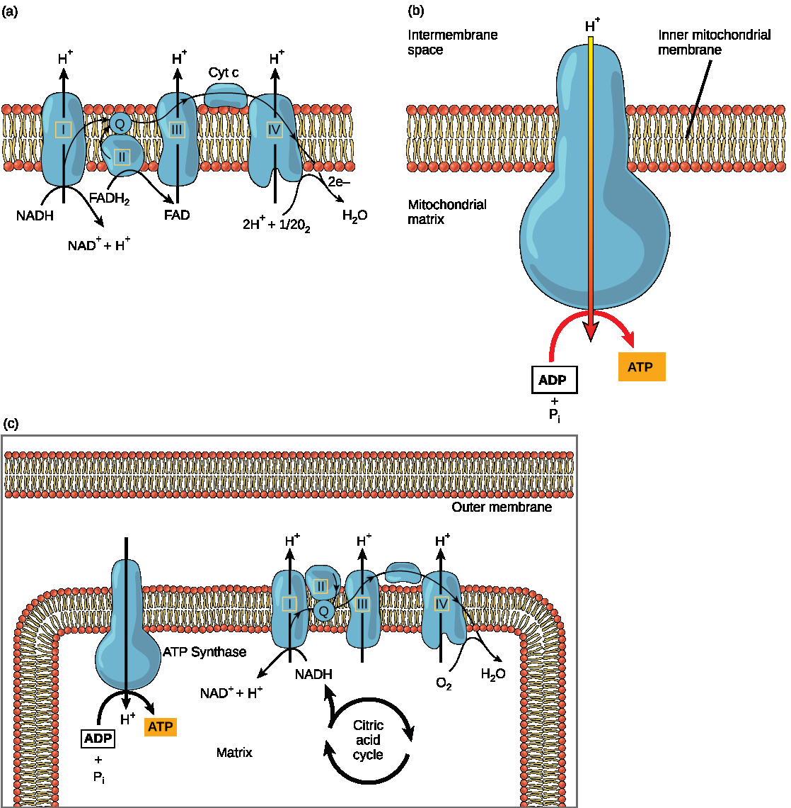
Electrons from NADH and FADH₂ are passed to protein complexes in the electron transport chain. As they are passed from one complex to another (there are a total of four), the electrons lose energy, and some of that energy is used to pump hydrogen ions from the mitochondrial matrix into the intermembrane space. In the fourth protein complex, the electrons are accepted by oxygen, the terminal acceptor. The oxygen with its extra electrons then combines with two hydrogen ions, further enhancing the electrochemical gradient, to form water. If there were no oxygen present in the mitochondrion, the electrons could not be removed from the system, and the entire electron transport chain would back up and stop. The mitochondria would be unable to generate new ATP in this way, and the cell would ultimately die from lack of energy. This is the reason we must breathe to draw in new oxygen.
In the electron transport chain, the free energy from the series of reactions just described is used to pump hydrogen ions across the membrane. The uneven distribution of H⁺ ions across the membrane establishes an electrochemical gradient, owing to the H⁺ ions' positive charge and their higher concentration on one side of the membrane. Hydrogen ions diffuse through the inner membrane through an integral membrane protein called ATP synthase (Figure 4.15b). This complex protein acts as a tiny generator, turned by the force of the hydrogen ions diffusing through it, down their electrochemical gradient from the intermembrane space, where there are many mutually repelling hydrogen ions to the matrix, where there are few. The turning of the parts of this molecular machine regenerate ATP from ADP. This flow of hydrogen ions across the membrane through ATP synthase is called chemiosmosis.
Chemiosmosis (Figure 4.15c) is used to generate 90 percent of the ATP made during aerobic glucose catabolism. The result of the reactions is the production of ATP from the energy of the electrons removed from hydrogen atoms. These atoms were originally part of a glucose molecule. At the end of the electron transport system, the electrons are used to reduce an oxygen molecule to oxygen ions. The extra electrons on the oxygen ions attract hydrogen ions (protons) from the surrounding medium, and water is formed. The electron transport chain and the production of ATP through chemiosmosis are collectively called oxidative phosphorylation.
The number of ATP molecules generated from the catabolism of glucose varies. For example, the number of hydrogen ions that the electron transport chain complexes can pump through the membrane varies between species. Another source of variance stems from the shuttle of electrons across the mitochondrial membrane. The NADH generated from glycolysis cannot easily enter mitochondria. Thus, electrons are picked up on the inside of the mitochondria by either NAD⁺ or FAD⁺. Fewer ATP molecules are generated when FAD⁺ acts as a carrier. NAD⁺ is used as the electron transporter in the liver and FAD⁺ in the brain, so ATP yield depends on the tissue being considered.
Another factor that affects the yield of ATP molecules generated from glucose is that intermediate compounds in these pathways are used for other purposes. Glucose catabolism connects with the pathways that build or break down all other biochemical compounds in cells, and the result is somewhat messier than the ideal situations described thus far. For example, sugars other than glucose are fed into the glycolytic pathway for energy extraction. Other molecules that would otherwise be used to harvest energy in glycolysis or the citric acid cycle may be removed to form nucleic acids, amino acids, lipids, or other compounds. Overall, in living systems, these pathways of glucose catabolism extract about 34 percent of the energy contained in glucose.
Identifying and treating mitochondrial disorders is a specialized medical field. The educational preparation for this profession requires a college education, followed by medical school with a specialization in medical genetics. Medical geneticists can be board certified by the American Board of Medical Genetics and go on to become associated with professional organizations devoted to the study of mitochondrial disease, such as the Mitochondrial Medicine Society and the Society for Inherited Metabolic Disease.
Complete the written checkpoint above to unlock the quiz.
- Discuss the fundamental difference between anaerobic cellular respiration and fermentation
- Describe the type of fermentation that readily occurs in animal cells and the conditions that initiate it
- Describe alcohol fermentation and its applications
- Distinguish facultative anaerobes from obligate anaerobes
In aerobic respiration, the final electron acceptor is an oxygen molecule, O₂. If aerobic respiration occurs, then ATP will be produced using the energy of the high-energy electrons carried by NADH or FADH₂ to the electron transport chain. If aerobic respiration does not occur, NADH must be reoxidized to NAD⁺ for reuse as an electron carrier for glycolysis to continue. How is this done?
In some living systems the electron transport chain (ETC) uses an organic molecule as the final electron acceptor. Processes that use an organic molecule to regenerate NAD⁺ from NADH are collectively referred to as fermentation. In contrast, in some living systems, the electron transport chain (ETC) uses an inorganic molecule (other than oxygen) as a final electron acceptor to regenerate NAD⁺ which is called anaerobic cellular respiration (does not require oxygen). Both processes allow organisms to convert energy for their use in the absence of oxygen.
The fermentation method used by animals and some bacteria like those in yogurt is lactic acid fermentation (Figure 4.16). This occurs routinely in mammalian red blood cells and in skeletal muscle that has insufficient oxygen supply to allow aerobic respiration to continue (that is, in muscles used to the point of fatigue). In muscles, lactic acid produced by fermentation must be removed by the blood circulation and brought to the liver for further metabolism.
The enzyme that catalyzes this reaction is lactate dehydrogenase. The reaction can proceed in either direction, but the left-to-right reaction is inhibited by acidic conditions. This lactic acid build-up causes muscle stiffness and fatigue. Once the lactic acid has been removed from the muscle and is circulated to the liver, it can be converted back to pyruvic acid and further catabolized for energy.
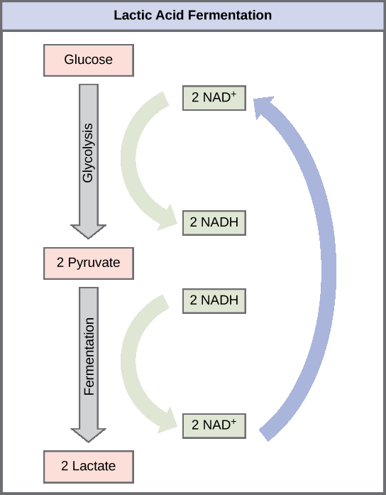
Another familiar fermentation process is alcohol fermentation (Figure 4.17), which produces ethanol, an alcohol.
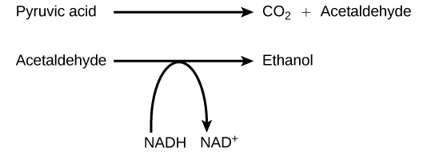
In the first reaction, a carboxyl group is removed from pyruvic acid, releasing carbon dioxide as a gas. The loss of carbon dioxide reduces the molecule by one carbon atom, making acetaldehyde. The second reaction removes an electron from NADH, forming NAD⁺ and producing ethanol from the acetaldehyde, which accepts the electron. The fermentation of pyruvic acid by yeast produces the ethanol found in alcoholic beverages (Figure 4.18). If the carbon dioxide produced by the reaction is not vented from the fermentation chamber, for example in beer and sparkling wines, it remains dissolved in the medium until the pressure is released. Ethanol above 12 percent is toxic to yeast, so natural levels of alcohol in wine occur at a maximum of 12 percent.
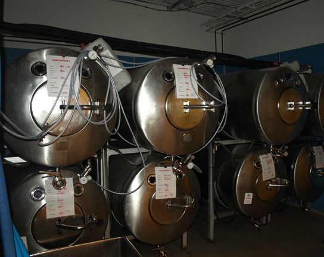
Certain prokaryotes, including some species of bacteria and Archaea, use anaerobic respiration. For example, the group of Archaea called methanogens reduces carbon dioxide to methane to oxidize NADH. These microorganisms are found in soil and in the digestive tracts of ruminants, such as cows and sheep. Similarly, sulfate-reducing bacteria and Archaea, most of which are anaerobic (Figure 4.19), reduce sulfate to hydrogen sulfide to regenerate NAD⁺ from NADH.
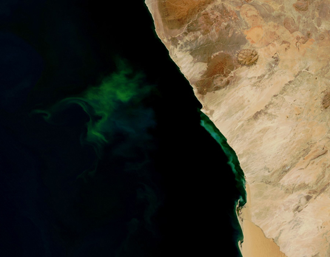
Other fermentation methods occur in bacteria. Many prokaryotes are facultatively anaerobic. This means that they can switch between aerobic respiration and fermentation, depending on the availability of oxygen. Certain prokaryotes, like Clostridia bacteria, are obligate anaerobes. Obligate anaerobes live and grow in the absence of molecular oxygen. Oxygen is a poison to these microorganisms and kills them upon exposure.
It should be noted that all forms of fermentation, except lactic acid fermentation, produce gas. The production of particular types of gas is used as an indicator of the fermentation of specific carbohydrates, which plays a role in the laboratory identification of the bacteria. The various methods of fermentation are used by different organisms to ensure an adequate supply of NAD⁺ for the sixth step in glycolysis. Without these pathways, that step would not occur, and no ATP would be harvested from the breakdown of glucose.
Complete the written checkpoint above to unlock the quiz.
- Discuss the way in which carbohydrate, protein, and lipid metabolic pathways interrelate
- Explain why metabolic pathways are not considered closed systems
You have learned about the catabolism of glucose, which provides energy to living cells. But living things consume more than just glucose for food. How does a turkey sandwich, which contains protein, provide energy to your cells? This happens because all of the catabolic pathways for carbohydrates, proteins, and lipids eventually connect into glycolysis and the citric acid cycle pathways (Figure 4.20). Metabolic pathways should be thought of as porous — that is, substances enter from other pathways, and other substances leave for other pathways. These pathways are not closed systems. Many of the products in a particular pathway are reactants in other pathways.
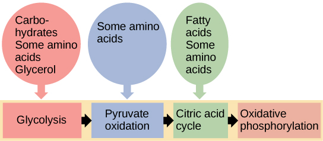
Glycogen, a polymer of glucose, is a short-term energy storage molecule in animals. When there is adequate ATP present, excess glucose is converted into glycogen for storage. Glycogen is made and stored in the liver and muscle. Glycogen will be taken out of storage if blood sugar levels drop. The presence of glycogen in muscle cells as a source of glucose allows ATP to be produced for a longer time during exercise.
Sucrose is a disaccharide made from glucose and fructose bonded together. Sucrose is broken down in the small intestine, and the glucose and fructose are absorbed separately. Fructose is one of the three dietary monosaccharides, along with glucose and galactose (which is part of milk sugar, the disaccharide lactose), that are absorbed directly into the bloodstream during digestion. The catabolism of both fructose and galactose produces the same number of ATP molecules as glucose.
Proteins are broken down by a variety of enzymes in cells. Most of the time, amino acids are recycled into new proteins. If there are excess amino acids, however, or if the body is in a state of famine, some amino acids will be shunted into pathways of glucose catabolism. Each amino acid must have its amino group removed prior to entry into these pathways. The amino group is converted into ammonia. In mammals, the liver synthesizes urea from two ammonia molecules and a carbon dioxide molecule. Thus, urea is the principal waste product in mammals from the nitrogen originating in amino acids, and it leaves the body in urine.
The lipids that are connected to the glucose pathways are cholesterol and triglycerides. Cholesterol is a lipid that contributes to cell membrane flexibility and is a precursor of steroid hormones. The synthesis of cholesterol starts with acetyl CoA and proceeds in only one direction. The process cannot be reversed, and ATP is not produced.
Triglycerides are a form of long-term energy storage in animals. Triglycerides store about twice as much energy as carbohydrates. Triglycerides are made of glycerol and three fatty acids. Animals can make most of the fatty acids they need. Triglycerides can be both made and broken down through parts of the glucose catabolism pathways. Glycerol can be phosphorylated and proceeds through glycolysis. Fatty acids are broken into two-carbon units that enter the citric acid cycle.
An early form of photosynthesis developed that harnessed the sun's energy using compounds other than water as a source of hydrogen atoms, but this pathway did not produce free oxygen. It is thought that glycolysis developed prior to this time and could take advantage of simple sugars being produced, but these reactions were not able to fully extract the energy stored in the carbohydrates. A later form of photosynthesis used water as a source of hydrogen ions and generated free oxygen. Over time, the atmosphere became oxygenated. Living things adapted to exploit this new atmosphere and allowed respiration as we know it to evolve. When the full process of photosynthesis as we know it developed and the atmosphere became oxygenated, cells were finally able to use the oxygen expelled by photosynthesis to extract more energy from the sugar molecules using the citric acid cycle.
Complete the written checkpoint above to unlock the quiz.
| Lesson | Must-Know Concepts |
|---|---|
| L1 — Pathways | Metabolism, anabolic/catabolic, 1st & 2nd laws of thermodynamics, entropy, potential/kinetic/chemical energy. |
| L2 — Enzymes | Free energy (ΔG), exergonic/endergonic, activation energy, enzymes, substrates, active site, induced fit. |
| L3 — Regulation | Competitive/allosteric inhibition, cofactors, coenzymes, vitamins, feedback inhibition, drug development. |
| L4 — ATP | ATP structure (adenine+ribose+3 phosphates), energy currency, glycolysis: glucose→2 pyruvate+2ATP+2NADH in cytoplasm. |
| L5 — Citric/ETC | Acetyl CoA, citric acid cycle (matrix), ETC (inner membrane), chemiosmosis, ATP synthase, O₂ final acceptor, ~34% efficiency. |
| L6 — Fermentation | Lactic acid (muscles), alcohol (yeast), anaerobic respiration, facultative vs. obligate anaerobes, NAD⁺ regeneration. |
| L7 — Connections | Glycogen, other sugars, protein→amino acids→urea, lipids→beta oxidation→acetyl CoA, evolution of pathways. |
Complete the reflection above to unlock the 20-question practice test.